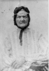
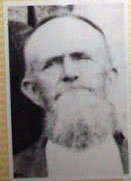
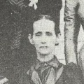
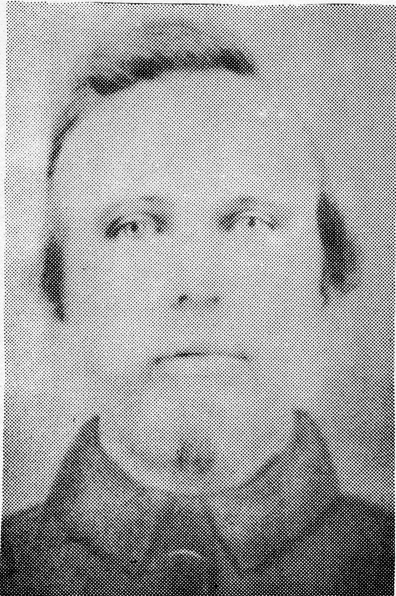

The Coalson family was one of the more challenging families for me to map out. Out of my grandparents, my maternal grandmother's family has moved
around the most in recent generations. Historically from Kentucky, my earliest records indicate the Coalsons lived in the Southern Colonies before the American
Revolution, with my branch eventually moving to Mississippi. As the information on this family is not as reliable as that of other branches, I will take a more
direct approach to discussing this family. I will focus on the lineage that has been mapped out over the years and mention siblings and other theories in passing.
Something to note before diving in to the Coalson family is the spelling of Coalson. "Coalson" is used almost universally in the current generations of the
family, while several centuries ago there were two spellings: both "Coalson" and "Colson" show up on different records. Sometimes these are the result of recordkeeping
errors (census takers weren't always the best spellers), or in other cases the name simply changes over time. I will be using the Coalson spelling in this website as that
is the last name of my branch of the Coalson family and the name I grew up hearing.
This webpage will begin with Alexander Sanders Coalson, as he is the earliest Coalson that I have information for. He was born April 29, 1762,
in Northampton County in the British Colony of North Carolina. He married Bathsheba Futrell (1762-1860?) in 1787 in Northampton County. They were the parents of many
children, of whom four are on my tree and listed below. Alexander passed away on August 20, 1852, in Trigg County, KY, at the age of 90. I am unsure of Bathsheba's death
date; my family tree has it listed as 1860 but I am not confident about that date. They were buried in Sumner Cemetery in Trigg County.
Charity (Colson/Coalson) Boren (1791-1870)
Charity was born in 1791 and married Stephen Boren (1760-1843) in 1809. She passed away in 1870 in Trigg County. Stephen had passed away 27 years earlier in 1843
Trigg County. Together they were buried in Boren Cemetery in Cadiz, KY. Find A Grave lists two children and many grandchildren that comprise the Boren family.
Thomas Colson/Coalson (1794-1840)
Thomas was born in 1794 and married Temperence Griffin (1790-1882). Temperence is the oldest member of the Coalson family of whom I have a picture.
Thomas passed away on February 24, 1840, in Trigg County at the age of 45/46. Temperence passed away 42 years later on April 30, 1882, at the age of 91/92.
Thomas was buried in Sumner Cemetery in Trigg County while Temperence was buried in Pleasant Hill Cemetery (also in Trigg County). Find A Grave lists four children of this
couple, using the last name "Colson."
Temperence (Griffin) Coalson/Colson
Sarah (Colson/Coalson) Futrell (1795-1888)
Sarah was the third child of Alexander and Bathsheba, born in 1795 in North Carolina. She married Winborne Futrell (1791-1862), a veteran of the War of 1812. He passed away
on May 1, 1862, in Trigg County, at the age of 70. Sarah followed him in death 26 years later on May 4, 1888, in Trigg County, at the age of 92/93. They were buried in East
End Cemetery in Cadiz, KY. The Futrell family shows up several times in the Coalson family tree, indicating there were multiple marriages between members of the two
families over the years.
William Coalson (1799-1851)
William is the fourth child I have listed for Alexander and Bathsheba, born 1799 in Anson County, NC. He married Malinda Melissa Lindsey (c. 1804 - 1851) on April 9, 1823,
in Trigg, KY. I have seven listed children of the couple below. William passed away on March 22, 1851, in Jackson, MS, at the age of 51/52.
Malinda died the same year, also in Jackson, around the age of 46/47. I do not have a burial record.
John Marshall Coalson (1826-1897)
John was the firstborn child of William and Malinda, born July 1, 1826, in Trigg County. He married Mary Eleanor Shirley (1839-1928) on April 9, 1856, in Choctaw County, MS.
Together they had eight children, five daughters and three sons:
John Coalson (1861-1914)
Ora (Coalson) Massey (1863-1923)
Mary (Coalson) Coulson (1869-1948)
Alma (Coalson) Kuhn (1871-1944)
Vines Coalson (1873-1943)
Joseph Coalson (1875-1953)
Myrtice (Coalson) Scott (1878-1956)
Harriet (Coalson) Durrett (1883-1962)
John passed away on February 3, 1897, in Bethesda, TX, at the age of 70. Mary passed away 31 years later on March 28, 1928, in Parker County, TX, at the age of 88. They were buried in Bethesda
Cemetery in Garner, TX.
John Coalson Mary (Shirley) Coalson
Allen Powell Coalson (1829-1895)
Allen was born September 2, 1829, in Bell County, KY. He married Georgia Ann Sawyer (1837-1900), and while he served in the Confederacy during the American Civil War, the couple
had ten children:
William Coalson (1855-1902)
Eusula Coalson (c. 1858 - ????)
Vines Coalson (1862-1935)
John Coalson (1866-1942)
Permelia Coalson (1867-1935)
Frances Coalson (1870-1965)
Laura Coalson (1872-1941)
Clara Coalson (c. 1874 - ????)
Frank Coalson (1879-1952)
Mary Coalson (1882-1965)
Allen passed away on July 5, 1895, in Leake County, MS, at the age of 65. Georgia followed him in death five years later in 1900, in Leake County, at the age of 62/63. I do not have a
burial record.
Nerses Coalson (c. 1833-????)
My only evidence for Nerses Coalson is a census record, listing her birth year and birthplace (Mississippi).
Vines Lindsey Coalson (1833-1912)
Vines was born November 12, 1833, in Jackson, MS. He married Mary Kate Alford (1857-1909), and together they had four children:
Troy (Coalson) Morris (1884-1944)
Toliver Coalson (1887-1972)
John Coalson (1889-1978)
Vines Coalson (1897-1971)
Mary passed away June 18, 1909, in Parker County, TX, at the age of 51. Vines followed her in death three
years later on May 4, 1912, in Palo Pinto County, TX, at the age of 78. They were buried in Bethesda Cemetery in Garner, TX.
Vines Coalson
Elizabeth Permelia Coalson (1838-1869)
Elizabeth was born in 1838 in Hinds County, MS. I have little knowledge of her life; there is a chance she married a George Washington King (1833-1910), but I cannot confirm this.
She passed away around 1869 in California. I have no burial record.
Harriett M. Coalson (1842-1915)
Harriett was born in 1842 in Hinds County, MS. I do not have much knowledge of her either; she might have married a William Terry (1840/1845-1904), but I have not confirmed this.
She passed away May 2, 1915, in Denton County, TX. I have no burial record.
Taliaferro Ferrall Coalson (1844-1863)
Taliaferro "Toliver" was born in 1844 in Hinds County, MS. He served in the American Civil War (presumably for the Confederacy), and was killed in the Battle of Shiloh on April 6,
1863, at the age of 18/19. I have no burial record.